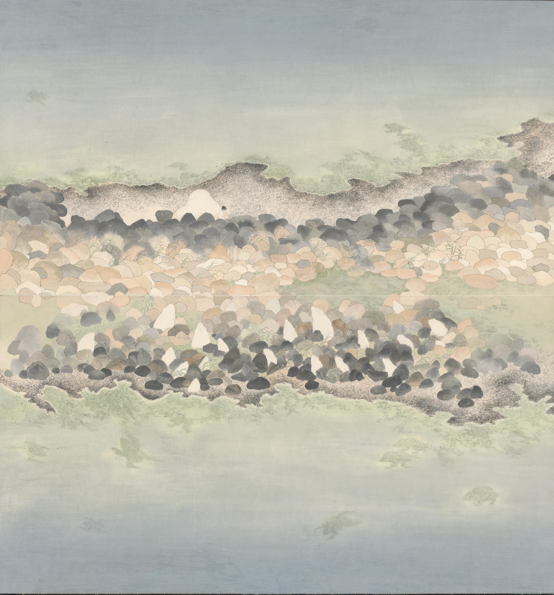
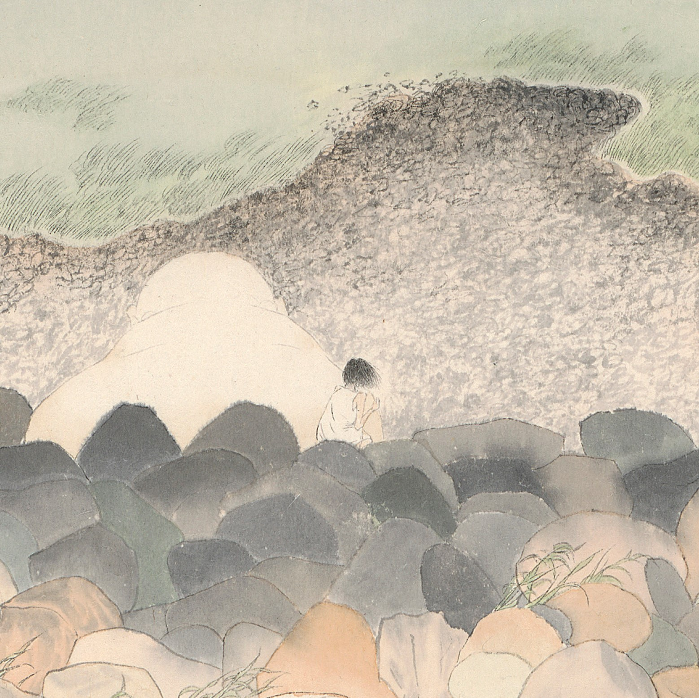

安所 Safe Land
南寮的海溫柔地托住我大多數的記憶，祂讓這裡看起來平靜又安逸，藏身在陰暗處的威脅都在對岸，我沒有初生之犢的膽識、我不敢向後看。 當我們以為不安已經在無法觸及的彼岸，恐懼從身後悄悄著陸。


南寮的海溫柔地托住我大多數的記憶，祂讓這裡看起來平靜又安逸，藏身在陰暗處的威脅都在對岸，我沒有初生之犢的膽識、我不敢向後看。 當我們以為不安已經在無法觸及的彼岸，恐懼從身後悄悄著陸。

